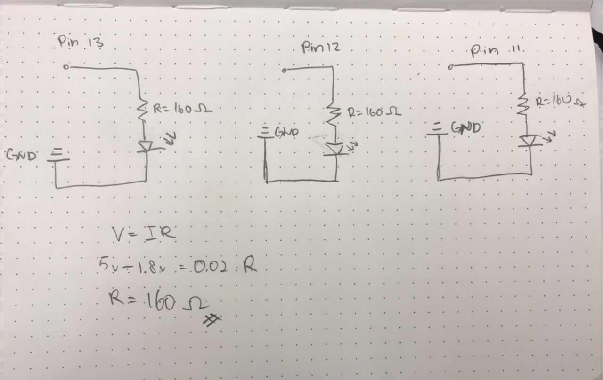
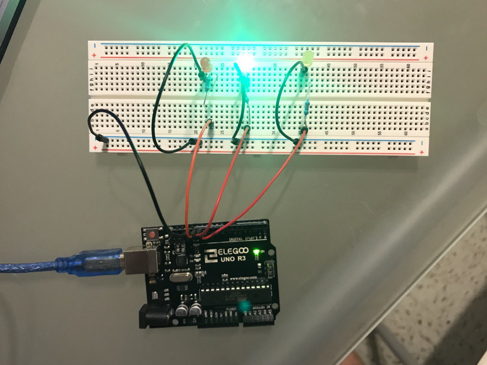

Overview
You will create a schematic for at least 3 LEDs connected to your Arduino, which you will implement as a circuit on your breadboard. You will write firmware (in a .ino file) for the circuit that makes the LEDs blink in a pattern.
Schematic and Circuit
For my circuit, I used the red, green and yellow LED. Since the voltage across the red, green and yellow LEDs is 1.8V, the calculations is as follows:

The actual circuit is shown below. I used a 220 ohm resistor across each LED.

Code Snippet
void setup() {
//initialize LED
pinMode(13, OUTPUT); //Initialize red LED
pinMode(12,OUTPUT); //Initialize green LED
pinMode(11, OUTPUT); //Initialize yellow LED
}
void loop() {
// put your main code here, to run repeatedly:
digitalWrite(13, HIGH); // switches the red LED on
delay(500); // Wait for 500 millisecond(s)
digitalWrite(13, LOW); // switches the red LED off
delay(500); // Wait for 500 millisecond(s)
digitalWrite(12, HIGH); // switches the green LED on
delay(500);
digitalWrite(12, LOW); // switches the green LED on
delay(500);
digitalWrite(11, HIGH); // switches the yello LED on
delay(500);
digitalWrite(11, LOW); // switches the yellow LED on
}
Circuit Operation
An animated gif of my circuit.